항공산업기사 (2005-05-29 기출문제)
1과목: 항공역학
1. 절대상승 한도를 가장 올바르게 설명한 것은?
- 상승률이 0m/sec 되는 고도
- 상승률이 0.5m/sec 되는 고도
- 상승률이 5㎝/sec 되는 고도
- 상승률이 0.5㎝/sec 되는 고도
(정답률: 70%)

2. 프로펠러 후류(ship stream)의 공기속도와 비행속도의 차이를 무슨 속도라 하는가?
- 가속속도(accelerated velocity)
- 후류속도(slip stream velocity)
- 유도속도(induced velocity)
- 하류속도(down stream velocity)
(정답률: 60%)
3. 프로펠러의 진행률을 가장 올바르게 설명한 것은?
- 프로펠러의 유효피치와 프로펠러 지름과의 비
- 추력과 토오크와의 비
- 프로펠러 기하피치와 프로펠러 유효피치와의 비
- 프로펠러 기하피치와 프로펠러 지름과의 비
(정답률: 69%)
4. 정적으로 안정된 항공기에 해당하는 것으로 가장 올바른 것은? (단, CM : 피칭 모멘트계수, α: 받음각)
- CM 이 α에 대한 기울기가 +값
- CM 이 α에 대한 기울기가 -값
- CM 에 α에 대한 기울기가 0값
- (
 )C.g가 0값
)C.g가 0값
(정답률: 49%)
5. 연속의 방정식을 설명한 내용으로 가장 올바른 것은? (단, 아음속임.)
- 유체의 점성을 고려한 방정식이다.
- 유체의 밀도와는 관계가 없다.
- 비압축성 유체에만 적용된다.
- 유체의 속도는 단면적과 관계된다.
(정답률: 63%)
6. 활공기에서 활공거리를 크게하기 위한 설명중 가장 올바른 것은?
- 형상항력을 최대로 한다.
- 가로 세로비를 작게한다.
- 날개의 가로 세로비를 크게한다.
- 표면 박리현상 방지를 위하여 표면을 적절히 거칠게 한다.
(정답률: 84%)
7. 헬리콥터 회전날개(Rotor Blade)에 적용되는 기본 힌지(Hinge)로 가장 올바른 것은?
- 플래핑힌지(Plapping),페더링힌지(Feathering),전단 힌지(Shear)
- 플래핑힌지, 페더링힌지, 항력힌지(Lead-Lag)
- 페더링힌지, 항력힌지, 전단힌지
- 플래핑힌지, 항력힌지, 경사(Slope)힌지
(정답률: 84%)
8. 도움날개(aileron) 및 승강키(elevator)의 힌지 모멘트와 이들 조종면을 원하는 위치에 유지하기 위한 조종력과의 관계로서 가장 올바른 것은?
- 힌지 모멘트가 커져도 필요한 조종력에는 변화가 없다.
- 힌지 모멘트가 크면 조종력은 작아도 된다.
- 힌지 모멘트가 크면 조종력도 커야 한다.
- 아음속 항공기에서는 힌지모멘가 커질수록 필요한 조종력은 작아진다.
(정답률: 69%)
9. 수직 꼬리날개가 실속하는 큰 옆미끄럼각에서도 방향안정성을 유지하기 위하여 사용되는 장치는?
- 플랩(flap)
- 도살핀(dosal fin)
- 스포일러(spoiler)
- 러더(rudder)
(정답률: 86%)
10. 항공기 중량 900㎏f, 날개면적 10m2인 제트 비행기가 수평등속도로 비행하고 있다. 이 때 추력은? (단, CL/CD=3)
- 300㎏f
- 250㎏f
- 200㎏f
- 150㎏f
(정답률: 75%)
11. 항공기가 기관이 정지한 상태에서 수직강하 하고 있을 때 도달할 수 있는 최대속도를 종극속도라 한다. 종극속도는 어떠한 상태에 이를 때의 속도를 말하는가?
- 항공기 총중량과 항공기에 발생되는 양력이 같은 경우
- 항공기 총중량과 항공기에 발생되는 항력이 같아지는 경우
- 항공기 양력의 수평분력과 항력의 수직분력이 같은 경우
- 항공기 양력과 항력이 같은 경우
(정답률: 68%)
12. NACA 2415에서 "2"는 무엇을 의미 하는가?
- 최대캠버가 시위의 2%
- 최대두께가 시위의 2%
- 최대캠버 위치가 CHORD의 20%
- 최대두께가 시위의 20%
(정답률: 78%)
13. 프로펠러의 효율이 80%인 항공기가 그 기관의 최대출력이 800마력인 경우 이 비행기가 수평 최대속도에서 낼 수 있는 최대 이용마력은?
- 640㎰
- 760㎰
- 800㎰
- 880㎰
(정답률: 78%)
14. 그림과 같이 상대적으로 갑작스런 실속이 일어나는 특성을 갖는 날개골은?
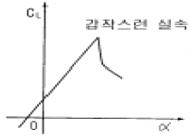
- 두께가 두꺼운 날개골
- 앞전 반지름이 큰 날개골
- 캠버가 큰 날개골
- 층류 날개골
(정답률: 58%)
15. 프로펠러의 페더링(feathering)상태란 깃 각이 어느 상태 인가?
- 깃 각이 0°에 근접한 상태
- 깃 각이 90°에 근접한 상태
- 깃 각이 -90°에 근접한 상태
- 깃 각이 180°에 근접한 상태
(정답률: 68%)
16. 피치 업(pitch up) 원인과 가장 거리가 먼 것은?
- 뒤젖힘 날개의 날개끝 실속
- 뒤젖힘 날개의 비틀림
- 쳐든각 효과의 감소
- 날개의 풍압중심이 앞으로 이동
(정답률: 61%)
17. 동적가로안정이 불안정할 때 나타나는 현상과 가장 거리가 먼 것은?
- 방향 불안정
- 세로방향 불안정
- 나선 불안정
- 가로방향 불안정
(정답률: 63%)
18. 날개면적이 100 m2 이고 평균시위가 5m일 때의 가로 세로비는 얼마인가?
- 1
- 2
- 3
- 4
(정답률: 80%)
19. 대류권에서 고도가 증가함에 따라 공기의 밀도,온도,압력은 어떻게 되는가 ?
- 밀도, 온도는 감소하고 압력은 증가한다.
- 밀도는 증가하고 압력, 온도는 감소한다.
- 밀도, 압력, 온도 모두 증가한다.
- 밀도, 압력, 온도 모두 감소한다.
(정답률: 76%)
20. 비행기가 무동력으로 하강하는 것에 대응하는 헬리콥터가 갖고 있는 가장 큰 특징은?
- 수직상승
- 자전하강(Autorotation)
- 플래핑(Flapping)
- 리드-래그(lead-lag)
(정답률: 75%)
2과목: 항공기관
21. 그림은 어떤 싸이클인가?
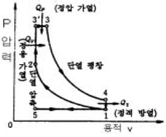
- 카르노싸이클
- 정적싸이클
- 정압싸이클
- 합성싸이클
(정답률: 68%)
22. 프로펠러(Propeller)의 Track이란?
- 프로펠러(Propeller)의 피치(pitch) 각이다.
- 프로펠러 블레이드(Propeller blade) 선단 회전 궤적이다.
- 프로펠러 1회전하여 전진한 거리다.
- 프로펠러 1회전하여 생기는 와류(vortex)이다.
(정답률: 76%)
23. M.E.T.O 마력을 가장 올바르게 설명한 것은?
- 순항마력이다.
- 시간제한없이 장시간 연속작동을 보증할 수 있는 연속 최대마력이다.
- 기관이 낼 수있는 최대의 마력이다.
- 열효율이 가장 좋은 상태에서 얻어지는 동력이다.
(정답률: 45%)
24. 어떤 기관의 총 배기량이 1,500cc이며,압축비가 8.5일 때 이 기관의 충진 체적(Clearance Volume)은?
- 176cc
- 250cc
- 300cc
- 350cc
(정답률: 59%)
25. 이상적인 터보 제트엔진의 구성과정에서 등엔트로피 과정이 아닌 것은?
- 압축 과정
- 터빈 과정
- 분사 과정
- 연소 과정
(정답률: 36%)
26. 왕복기관에서 실린더 안티 노크성(anti knockcharacteristic)을 가진 연료를 사용하는 가장 큰 이유는 무엇을 방지하기 위한 것인가?
- 디토네이션(Detonation)
- 역화(Back fire)
- 킥백(Kick Back)
- 후화(After fire)
(정답률: 66%)
27. 현재 사용중인 대부분의 대형 터보 팬 엔진의 역추력 장치(Thrust Reverser)의 가장 큰 특징은?
- Fan Reverser와 Thrust Reverser를 모두 갖춘 구조가 많이 이용된다.
- Fan Reverser만 갖춘 구조가 가장 많이 이용된다.
- Turbine Reverser만 갖춘 구조가 이용된다.
- 역 추력장치를 구동하기 위한 동력으로는 유압식이 주로 사용된다.
(정답률: 44%)
28. 왕복엔진의 피스톤(Piston) 링의 주요 기능으로 가장 거리가 먼 것은?
- 연소실 내 압력유지
- 윤활유가 과도하게 연소실로 들어가는 것은 방지
- 연소 압력이 상승됨
- 피스톤 열을 실린더 벽면으로 전달하는 기능
(정답률: 59%)
29. 터보제트 엔진의 배기노즐(Exhaust Nozzle)의 주 목적은?
- 배기가스를 정류만 한다.
- 배기가스의 압력에너지를 속도에너지로 바꾸어 추력을 얻는다.
- 배기가스의 속도에너지를 압력에너지로 바꾸어 추력을 얻는다.
- 배기가스의 온도를 조절한다.
(정답률: 84%)
30. 마그네토의 배전기(Distributor) 로터의 속도를 결정하는 공식은?
- 크랭크축 속도/2
- 실린더수/(2로브의 수)
- 실린더수/로브(lobe)의 수
- 실린더수 로브의 수
(정답률: 40%)
31. 대형 터보 팬(Turbo Fan)엔진을 장착한 항공기에서 점화계통(Ignition System)이 자화되었을 때, 익사이터(Exciter)의 일차 코일에 공급되는 전원은?
- AC 115V,60Hz
- AC 115V,400Hz
- DC 28V,400Hz
- AC 220V,60Hz
(정답률: 73%)
32. 부자식 기화기(float-type caburator)에서 부자(float)의 높이(level)를 조절하는데 사용되는 일반적인 방법으로 가장 올바른 것은?
- 부자의 축을 길거나 짧게 조절
- 부자의 무게를 증감시켜서 조절
- 니들 밸브시트(needle valve seat)에 심(shim)을 추가 하거나 제거시켜 조절
- 부자의 피봇 암(pivot arm)의 길이를 변경
(정답률: 72%)
33. 이코노마이저 밸브가 닫힌위치로 고착된다면 무슨 일이 일어나겠는가?
- 순항속도이상에서 디토네이션이 발생하게된다.
- 순항속도이상에서 조기점화가 발생하게된다.
- 순항속도이하에서 디토네이션이 발생하게된다.
- 순항속도이하에서 조기점화가 발생하게된다.
(정답률: 60%)
34. 가스터빈 엔진의 어느 부분에서 최고압력이 나타나는가?
- 압축기 입구
- 압축기 출구
- 터빈 출구
- 터빈 입구
(정답률: 70%)
35. 프로펠러 깃 선단(tip)이 회전방향의 반대방향으로 처지게(lag)하는 힘으로 가장 올바른 것은?
- 추력-굽힘 력
- 공력-비틀림 력
- 원심-비틀림 력
- 토크-굽힘 력
(정답률: 46%)
36. 왕복 엔진오일의 기능이 아닌 것은?
- 재생작용
- 기밀작용
- 윤활작용
- 냉각작용
(정답률: 85%)
37. 가스터빈 기관의 축류식 압축기의 실속을 방지하기 위한 방법이 아닌 것은?
- 다축식 구조
- 가변 고정자 깃
- 블리드 밸브
- 가변 회전자 깃
(정답률: 45%)
38. 터빈 깃의 냉각 방법 중 터빈 깃의 내부를 중공으로 제작하여 이곳으로 차가운 공기가 지나가게 함으로써 터빈 깃을 냉각시키는 방법은?
- 충돌냉각
- 공기막냉각
- 침출냉각
- 대류냉각
(정답률: 76%)
39. 열 역학적 성질에는 강도성질과 종량성질이 있는데, 강도 성질과 가장 관계가 먼 것은?
- 온도
- 밀도
- 비체적
- 질량
(정답률: 47%)
40. 비열비( 】)에 대한 공식 중 맞는 것은? (단, CP : 정압비열, CV : 정적비열)
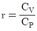
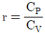
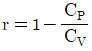
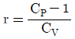
(정답률: 57%)
3과목: 항공기체
41. 구조용 캐슬너트(Plain Castellated Air Frame Nut)에 대한 설명 내용으로 가장 거리가 먼 것은?
- 나사에 구멍이 있는 스터드와 함께 사용한다.
- 인장용의 홈이 있는 너트다.
- 세트 스크류 끝부분의 나사가 있는 로드에 장착되어 고정하는 역할을 한다.
- 장착부품과 상대 운동을 하는 볼트에 사용한다.
(정답률: 42%)
42. 그림의 V-n 선도에서 순항 성능이 가장 효율적으로 얻어지도록 정한 설계속도는?
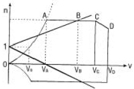
- VS
- VA
- VC
- VD
(정답률: 46%)
43. 조종계통의 턴버클 안전결선(Turn buckle safety wiring)에서 복선식 결선법은?
- 모든 조종계통 Cable에 해당된다.
- Cable직경이 1/8인치 이하에만 한다.
- Cable직경이 1/8인치 이상에만 한다.
- 비가요성 케이블(Nonflexible cable)에만 한다.
(정답률: 79%)
44. 착륙장치는 타이어의 수에 따라 일반적으로 3가지로 분류한다. 해당되지 않는 것은?
- 이중식(dual type)
- 단일식(single type)
- 다발식(multy typy)
- 보기식(bogie type)
(정답률: 64%)
45. 다음의 SAE 식별방법 중 가장 올바른 내용은?
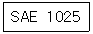
- 0 : 합금원소가 없다.
- 1 : 망간강이다.
- 5 : 탄소의 함유량이 5%이다.
- 2 : 니켈강이다.
(정답률: 53%)
46. 그림과 같이 연장공구(EXTENTION)를 이용하여 토크렌치(TORQUE WRENCH)를 사용하였을 때 필요한 토크값은?
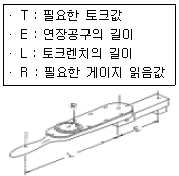
- R = TE/L
- R = LT/(L+E)
- R=T
- R=(TE/L)+E
(정답률: 67%)
47. 알루미나(Alumina)섬유의 특징으로 틀린 것은?
- 내열성이 뛰어나 공기중에서 1300℃로 가열해도 취성을 갖지 않는다.
- 표면처리를 하지 않아도 FRP나 FRM으로 할 수 있다.
- 전기, 광학적 특징은 은백색으로 전기의 도체이다.
- 금속과 수지와의 친화력이 좋다.
(정답률: 53%)
48. 다음의 금속 성질 중 어느 것이 좋아야 판재의 부품성형이 가장 용이한가?
- 경도
- 전성
- 연성
- 취성
(정답률: 37%)
49. 다음은 용접방법 중 좌진법과 우진법에 대하여 설명 하였다. 이중 틀린 것은?
- 열 이용율은 좌진법이 좋다.
- 용접변형은 우진법이 작다.
- 산화의 정도는 좌진법이 심하다.
- 용접이 가능한 판 두께는 좌진법이 얇다.
(정답률: 36%)
50. 그림과 같은 응력-변형률곡선(STRESS-STRAIN)에서 항복점(YIELD POINT)은 어느 것인가? (단, σ는 응력, ε은 변형률을 나타낸다)
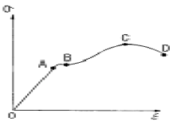
- A
- B
- C
- D
(정답률: 52%)
51. 탄성에너지에 대한 설명으로 가장 올바른 것은?
- 응력에 비례하고, 탄성계수의 제곱에 반비례한다.
- 응력의 제곱에 비례하고, 탄성계수에 반비례한다.
- 응력의 제곱에 비례하고, 탄성계수에 비례한다.
- 응력에 반비례하고, 탄성계수에 비례한다.
(정답률: 50%)
52. 올레오 쇽 스트럿트(Oleo Shock Strut)에 있는 메터링 핀(Metering pin)의 주 역할은 무엇인가?
- 업(up)위치에서 스트럿트를 제동한다.
- 다운(Down)위치에서 스트럿트를 제동한다.
- 스트럿트가 압착될 때 오일의 흐름을 제한하여 충격을 흡수한다.
- 스트럿트 내부의 공기의 량을 조정한다.
(정답률: 68%)
53. 서로 다른 재질의 금속이 접촉하면 접촉전기와 수분에 의해 국부전류흐름이 발생하여 부식을 초래하게 되는 현상을 무엇이라 하는가?
- Anti-Corrosion
- Galvanic Action
- Bonding
- Age Hardening
(정답률: 82%)
54. 복합재료로 제작된 항공기 부품의 결함(층분리 또는 내부손상)을 발견하기 위해 사용되는 검사방법이 아닌 것은?
- 육안검사
- 동전 두드리기 시험(Coin tap test)
- 와전류탐상검사(Eddy current inspection)
- 초음파검사
(정답률: 63%)
55. 벌크헤드에 대한 설명 중 가장 거리가 먼 내용은?
- 동체의 앞 뒤에 하나씩 있다.
- 동체에 작용하는 비틀림 모멘트를 담당한다.
- 동체가 비틀림에 의해 변형되는 것을 막아준다.
- 동체에서 공기 압력을 유지시키지 못한다.
(정답률: 74%)
56. Semi-Monocoque 구조에 대한 설명 중 가장 거리가 먼 것은 ?
- 금속제 항공기 구조의 대부분이 이 구조에 속한다.
- 구조가 단순하다.
- 유효공간이 크다.
- 무게에 비하여 강도가 크다.
(정답률: 64%)
57. 항공기용 와셔 취급시 일반적으로 고려해야 할 사항으로 가장 올바른 것은?
- 와셔는 필요 강도가 충분하면 볼트와 같은 재질이 아니어도 상관없다.
- 크램프 장착시에는 평 와셔를 붙여 사용할 필요가 없다.
- 기밀을 요하는 장소및 공기의 흐름에 노출되는 표면에는 락크 와셔를 필히 사용해야한다.
- 탭 와셔는 재사용할 수 있다.
(정답률: 39%)
58. 패스너 장착 부위에 프리로드(PRELOAD)를 주며, 피로하중에 대한 특성이 가장 좋은 하드웨어는?
- 테이퍼 록 볼트
- 블라인드 패스너
- 척볼트 패스너
- 록볼트 패스너
(정답률: 48%)
59. 샌드위치(sandwitch type)구조를 가장 올바르게 설명한 것은?
- 구조골격의 설치가 곤란한 곳에 금속판을 넣고 만든 구조이다.
- 구조골격의 설치가 곤란한 곳에 상하 표피사이에 벌집구조(honeycomb structure)를 접착재 (bondcompound)로 고정하여 면적당 무게가 적고 강도가 큰 구조이다.
- 구조 골격의 설치가 곤란한 곳에 가벼운 나무를 넣어서 만든 구조이다.
- 링 구조라고도 한다.
(정답률: 86%)
60. 설계제한 하중배수가 2.5인 비행기의 실속속도가 120㎞/h일 때 이 비행기의 설계 운용속도는?
- 190㎞/h
- 300㎞/h
- 150㎞/h
- 240㎞/h
(정답률: 46%)
4과목: 항공장비
61. 다음 계기 중 피토관의 동압관과 연결된 계기는?
- 고도계
- 선회계
- 자이로계기
- 속도계
(정답률: 68%)
62. Cabin Interphone System의 목적과 가장 거리가 먼 것은?
- 조종실과 객실 승무원과의 연락
- 객실 승무원 상호 연락
- 운항 승무원 상호 연락
- Cargo항공기 화물 적재시 통화
(정답률: 34%)
63. 대기압에 대한 설명 내용으로 가장 거리가 먼 것은?
- 공기의 무게에 의해서 생기는 압력이다.
- 위도45°에서 15℃의 해면 위의 압력을 1기압으로 한다.
- 지상에서 약 760㎜의 수은주 아랫면에 작용하는 압력과 같다.
- 1기압은 14.7psi 그리고 29.92in.Hg와 같다.
(정답률: 59%)
64. 고압력을 요구하는 계통에 사용되는 펌프의 구조로 가장 올바른 것은?
- Gear식
- Vane식
- Piston식
- 유압식
(정답률: 67%)
65. 20HP의 펌프를 쓰자면 몇 kW의 전동기가 필요한가? (단, 펌프의 효율은 80%이다)
- 12kW
- 19kW
- 10kW
- 8kW
(정답률: 67%)
66. 액량계기와 유량계기에 관한 설명으로 가장 올바른 것은?
- 액량계기는 연료탱크에서 기관으로 흐르는 연료의 유량을 지시한다.
- 액량계기는 대형기와 소형기에 차이 없이 대부분 직독식 계기이다.
- 유량계기는 연료탱에서 기관으로 흐르는 연료의 유량을 시간당 부피 또는 무게단위로 나타낸다.
- 유량계기는 연료탱크내에 있는 연료량을 연료의 무게나 부피를 나타낸다.
(정답률: 72%)
67. 항공기 객실여압(Cabin Pressurization)계통에서 압력릴리이프 밸브(Pressure Relief Valve)는 언제 열리게 되는가?
- 객실압력이 외부압력보다 일정한 차압을 초과할 경우
- 객실압력이 외부압력보다 일정한 차압을 초과하지 못할 경우
- 객실압력을 외부로부터 흡인할 경우
- 객실압력을 외부공기로 여압을 할 경우
(정답률: 76%)
68. 고도계의 보정방법 중 활주로에서 고도계가 활주로 표고를 가리키도록 하는 보정방법은 무엇인가?
- QNE 보정
- QNH 보정
- QFE 보정
- QFH 보정
(정답률: 54%)
69. 항공기에 사용되는 니켈-카드뮴 축전지의 일반적인 셀(cell)당 전압으로 가장 올바른 것은?
- 1.2∼1.25V
- 1.3∼1.7V
- 1.7∼2.00V
- 2.00∼2.25V
(정답률: 73%)
70. 가솔린 또는 유류화재의 분류는?
- A급 화재
- B급 화재
- C급 화재
- D급 화재
(정답률: 69%)
71. 항공기 유체계통을 연결시 신속분리 커플링(Quick- disconnectcoupling)을 사용하는 가장 큰 목적은?
- 유체계통 배관의 길이를 감소시킬 수 있다.
- 유체의 압력이 상승할 경우 안전율(Safety factor)을 증가시킬 수 있다.
- 유체의 손실이나 공기혼입이 없이 배관을 신속하게 분리할 수 있다.
- 유체의 흐름을 여러방향으로 손실없이 분배할 수 있다.
(정답률: 73%)
72. 다음의 브릿지 회로가 평형되는 조건은 어느 것인가?
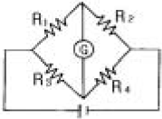
- R1×R2 = R3×R4
- R1×R3 = R2×R4
- R1×R4 = R2×R3
- R1×R2×R3 = R4
(정답률: 69%)
73. 다음 고도계의 오차중 히스테리시스(Histerisis)로 인한 오차는 어느 것인가?
- 눈금오차
- 온도오차
- 탄성오차
- 기계적오차
(정답률: 66%)
74. 다음 전동기에서 시동특성이 가장 좋은 것은?
- 직.병렬전동기
- 분권전동기
- 션트전동기
- 직권전동기
(정답률: 76%)
75. 위성 통신장치의 위상 위성방식으로 가장 올바른 것은?
- 지구상공 수백∼수천km의 궤도상을 수 시간의 주기로 선회하는 위성을 이용하는 방식
- 지구상공에 위성을 배치하고 지구국은 안테나를 사용하여 차례로 위성을 추적하여 상시 통신하는 방식
- 각종 관측 위상에서만 사용
- 안테나를 설치하여 위성을 추적
(정답률: 65%)
76. 자동 방향 탐지기(ADF) 계통과 가장 관계가 먼 것은?
- 루프(Loop), 감도(Sense) 안테나
- 무선 방위 지시계(RMI)
- 무지향성 표시 시설(NDB)
- 자이로 컴파스(Gyro Compass)
(정답률: 56%)
77. 단거리 전파 고도계(LRRA)에 대한 설명 내용으로 가장 올바른 것은?
- 기압 고도계이다.
- 고고도 측정에 사용된다.
- 전파 고도계로 항공기가 착륙할 때 사용된다.
- 평균 해수면 고도를 지시한다.
(정답률: 64%)
78. 션트저항을 계산하는 계산식 중 맞는 것은?
- 션트저항 = (계기의감도(암페어)⒡션트전류)/션트전류
- 션트저항 = (계기의감도(암페어)⒡계기의외부저항)/션트전류
- 션트저항 = (계기의감도(암페어)⒡계기의내부저항)/션트전류
- 션트저항 = (션트전류⒡계기의외부저항)/계기의감도(암페어)
(정답률: 56%)
79. 자이로 스코프의 섭동성을 이용한 계기는 어느 것인가?
- 경사계
- 인공 수평의
- 선회계
- 정침의
(정답률: 71%)
80. 유압계통에서 시퀀스 밸브(Sequence valve)란?
- 동작물체의 동작에 따른 작동유의 요구량 변화에도 흐름을 일정하게 해 주는 밸브
- 작동유의 속도를 일정하게 해 주는 밸브
- 작동유의 온도를 적당히 조절해 주는 밸브
- 한 물체의 작동에 의해 유로를 형성시켜 줌으로서 다른 물체가 순차적으로 동작케 해주는 밸브
(정답률: 69%)